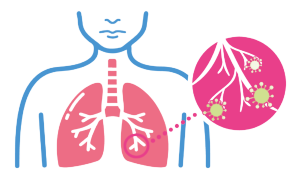

Pneumonia
O que é?
A pneumonia é uma infecção que se instala nos pulmões, provocada pela penetração de um agente infeccioso ou irritante,
(como fungos, vírus, bactérias, etc.) no espaço alveolar. Está infecção não é contagiosa ou transmissível.
A pneumonia é dividida em alguns tipos, sendo eles:
Pneumonia viral: As pneumonias virais são provocadas pela penetração de um vírus no espaço alveolar. Este tipo de pneumonia ataca as ramificações terminais
dos brônquios.
Pneumonia química: A pneumonia química é causada pela inalação de substâncias que agridem o pulmão, como agrotóxicos e fumaça. Essas substâncias inflamam
as vias aéreas facilitando a entrada de bactérias ao corpo, o que pode ocasionar em uma pneumonia bacteriana.
Pneumonia bacteriana: A pneumonia bacteriana é a mais comum, pois ela é ocasionada por bactérias presentes no nosso próprio corpo, como nariz, pele, boca,
sistema digestivo e garganta. Ela se desencadeia quando a imunidade do corpo cai.
Pneumonia por fungos: A pneumonia por fungos é a mais rara e também a mais agressiva. Este tipo é mais comum em pessoas portadoras de doenças crônicas
e imunodeprimidas, como pacientes oncológicos ou soropositivos.
Sintomas
Tosse seca ou com catarro de cor amarela ou esverdeada;
Náuseas e vômitos;
Dor no peito ou tórax;
Fraqueza;
Suspiros intensos;
Dor abdominal;
Perca de apetite;
Respiração ruidosa;
Falta de ar;
Febre alta.
Prevenção
Lavar as mãos com frequência (principalmente após usar o transporte público, trocar fraldas, espirrar ou tossir);
Não fumar;
Manter a carteirinha de vacinação em ordem (principalmente as vacinas da gripe, HIV e pneumocócica).
Tratamento
Para o tratamento da pneumonia é necessário o uso de antibióticos. A internação hospitalar também pode ocorrer em casos mais graves principalmente
quando o paciente apresenta falha renal, tem idade superior a 65 anos, precisa de assistência respiratória, temperatura abaixo do normal, idade menor que 2 meses e
baixos níveis de oxigênio no sangue.
